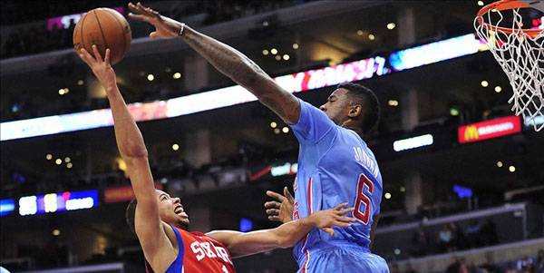
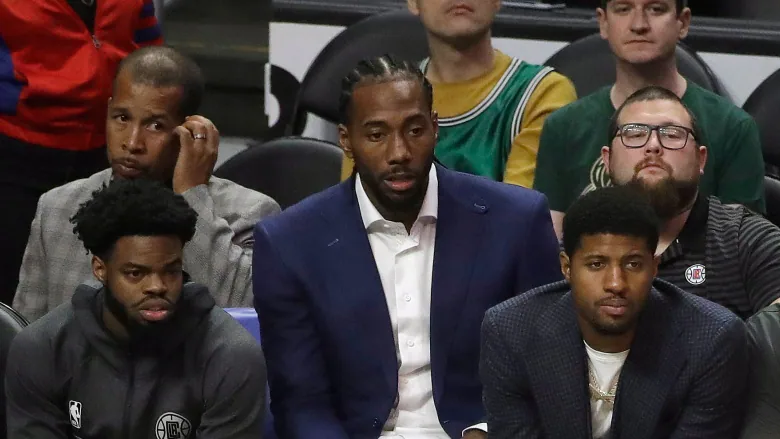

Angle Number 1: Injuries
Statistical Study proves injuries are more likely on the second game of a back to back.
Quote from Journal of Athletic Training states
"rest showed the strongest effect of all the variables studied. Simply not playing in back-to-back games can reduce the probability of an injury by almost 16% for the average player."
Other variables studied included: minutes, rebounds, field goal attempts, nba experience, pre-nba experience, height, and mass.
https://www.ncbi.nlm.nih.gov/pmc/articles/PMC6107769/
The Nuggets were eliminated early in this year's playoffs after their star player was injured on the second game of a back to back.

Angle Number 2: Decreased Player/Team Performance
According to Numberfire, an analytics website covering multiple sports, teams lose significantly more games on the second night of back to backs.
https://www.numberfire.com/nba/news/11922/are-nba-teams-playing-back-to-back-nights-at-a-disadvantage

Angle Number 3: Load Management, Star Players Taking off Games
Some teams opt to rest players to try to minimize injury over the course of the season. Kawhi Leonard, pictured below, is known for intentionally resting for a planned portion of games each season. Nevertheless, the league has started to fine teams for resting multiple healthy players in one game and fans are disappointed when their favorite players do not play. The term "load management" has been used to describe the new trend of intentionally resting healthy players.
https://www.espn.com/nba/story/_/id/31283853/nba-fines-san-antonio-spurs-25000-violating-resting-rules

Go Up